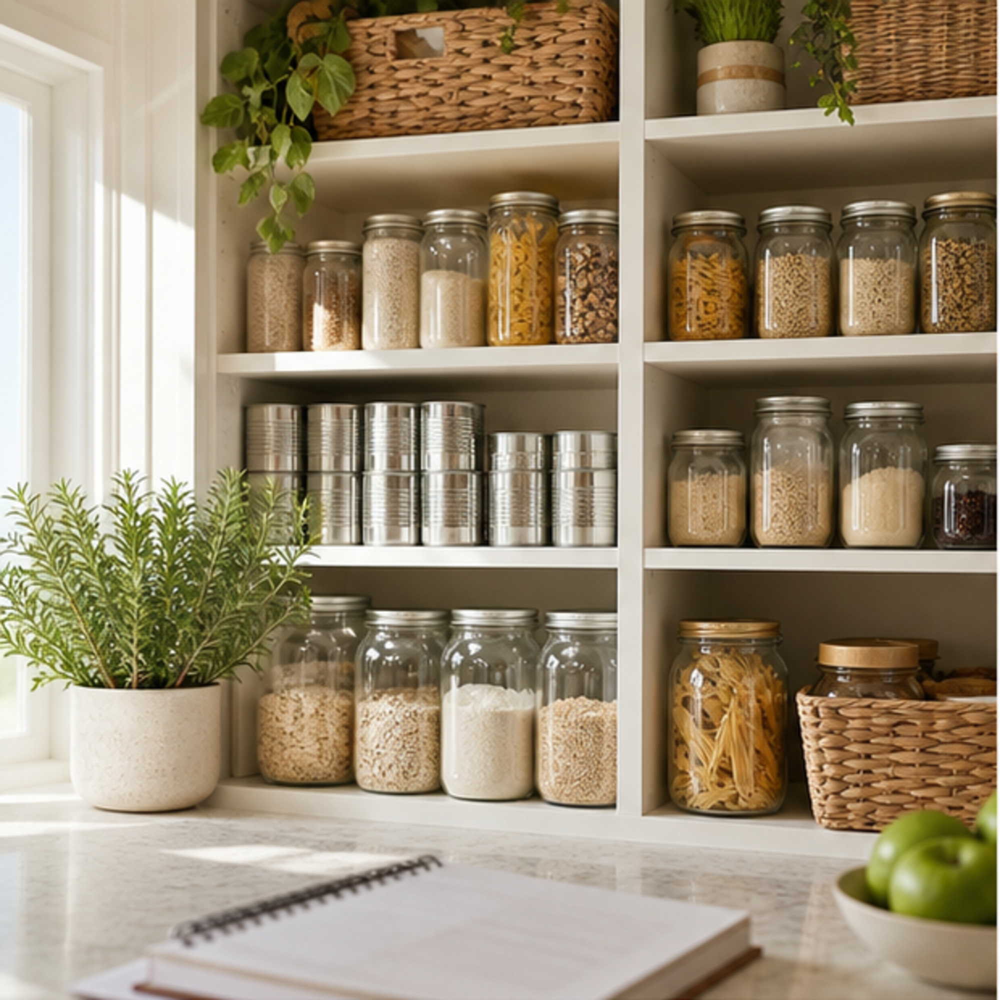
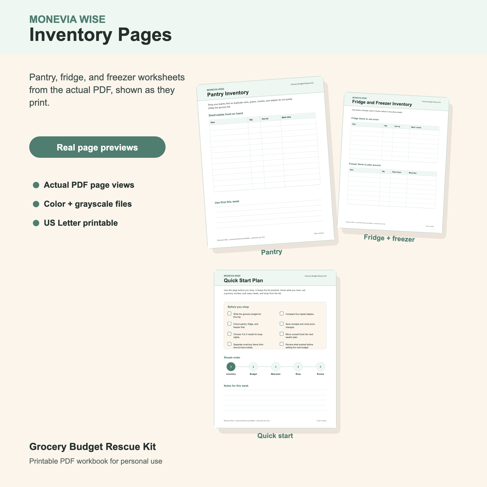

How to Lower Your Grocery Bill With a Pantry Inventory
A pantry inventory is one of the simplest grocery budget tools because it starts with what you already paid for.

Most grocery budgets do not fail at the checkout line. They start drifting earlier, when you plan meals without knowing what is already in the kitchen. A pantry inventory fixes that by turning shelves, fridge drawers, and freezer bins into the first stop in your shopping routine.
The goal is not to catalog every ingredient perfectly. The goal is to reduce duplicate purchases, use food before it expires, and build a list around actual gaps instead of habit.
Start With The Food That Needs A Job
Open the pantry and look for anything that has been sitting long enough to become invisible: pasta, rice, beans, canned tomatoes, oats, cereal, snacks, baking supplies, sauces, and unopened condiments. Write down the items that could become meals or sides this week.
Then check the fridge and freezer. This is where grocery money often leaks through forgotten leftovers, half-used produce, freezer meals, and meat bought on sale without a plan. If something needs to be used soon, it should shape the meal plan before new groceries do.

Make Three Simple Lists
A pantry inventory works best when it creates decisions, not clutter. Split your notes into three lists:
- Use first: food that expires soon, leftovers, opened packages, and freezer items you want to rotate.
- Meal builders: ingredients that can become dinner with one or two additions.
- Staple gaps: basics you truly need to restock, such as eggs, bread, milk, rice, or vegetables.
This keeps the inventory from becoming a giant list you never look at again. Each item has a purpose for the next grocery trip.
Turn Inventory Into Meals Before Shopping
Choose a few anchor meals from what you already have. If you find pasta and canned tomatoes, maybe you only need ground turkey and salad. If the freezer has chicken, maybe the list becomes tortillas, lettuce, and a vegetable side. If you have oats, peanut butter, and bananas, breakfast might be handled for several days.
Build the grocery list from the missing pieces. This is the point where the bill can shrink without feeling restrictive: you are not cutting meals, you are using paid-for food first.
Keep The Inventory Easy To Repeat
You do not need to inventory the whole kitchen every week. A five-minute check before shopping can be enough. Circle the food that needs to be used, write the meals it can support, and add only the gaps to the list.
At the end of the week, review what was still wasted or ignored. That information is valuable. It tells you which sale items, bulk buys, or ambitious meal ideas do not fit your real routine.